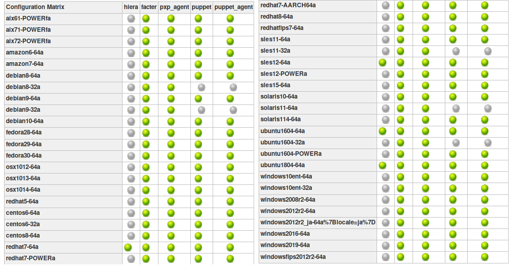

$ whoami/using|being/ open-sourcepuppet and its dependencies to runruntime - we build our own ruby, curl, openssl, boost, etc.puppet - Ruby gem, our main projectfacter - Ruby gem (v2), and C++ binary and libraries (v3)... - a bunch of other dependencies (Ruby, C++)built, tested, and shipped for 45 OSes/platforms (as of November)
puppet$ puppet resource user gabi
user { 'gabi':
ensure => 'present',
comment => 'gabi',
gid => 1000,
groups => ['wheel', 'input', 'lp', 'sys', 'network', 'docker'],
home => '/home/gabi',
shell => '/bin/zsh',
uid => 1000,
}
puppet translates this into platform-specific instructionsfacter$ facter system_uptime --json
{
"system_uptime": {
"days": 0,
"hours": 1,
"seconds": 4322,
"uptime": "1:12 hours"
}
}
rubyopensslcurlcurl has been maintained for over 20 years by a single personopenssl had 2 developers before the Heartbleed vulnerabilityruby - around 20 people are actively contributingmost of the time projects are maintained through volunteer efforts
puppet release had a regression
community provided a fix shortly after we released
ruby extensively on non-standard platformsfacterFacter.add('ip') do
url = 'https://api.ipify.org?format=json'
# {"ip":"79.114.90.219"}
response = open(url).read
if !response.to_s.empty?
result = JSON.parse(response)
setcode { result['ip'] }
end
end
$ facter ip 79.114.90.219
$ facter ip
C:/Program Files/Puppet Labs/Puppet/puppet/lib/ruby/2.5.0/net/protocol.rb:45: [BUG] Segmentation fault ruby 2.5.3p105 (2018-10-18 revision 65156) [x64-mingw32] -- Control frame information ----------------------------------------------- c:0024 p:---- s:0165 e:000164 CFUNC :wait_readable c:0023 p:0093 s:0160 e:000159 METHOD C:/puppet/lib/ruby/2.5.0/net/protocol.rb:45 c:0022 p:0557 s:0153 E:001568 METHOD C:/puppet/lib/ruby/2.5.0/net/http.rb:981 c:0021 p:0004 s:0140 e:000139 METHOD C:/puppet/lib/ruby/2.5.0/net/http.rb:920 c:0020 p:0029 s:0136 e:000135 METHOD C:/puppet/lib/ruby/2.5.0/net/http.rb:909 c:0019 p:0521 s:0132 e:000131 METHOD C:/puppet/lib/ruby/2.5.0/open-uri.rb:337 c:0018 p:0017 s:0111 e:000110 METHOD C:/puppet/lib/ruby/2.5.0/open-uri.rb:755 c:0017 p:0029 s:0104 e:000103 BLOCK C:/puppet/lib/ruby/2.5.0/open-uri.rb:226 [FINISH] c:0016 p:---- s:0101 e:000100 CFUNC :catch c:0015 p:0365 s:0096 E:0010e8 METHOD C:/puppet/lib/ruby/2.5.0/open-uri.rb:224 c:0014 p:0328 s:0081 e:000080 METHOD C:/puppet/lib/ruby/2.5.0/open-uri.rb:165 c:0013 p:0018 s:0069 e:000068 METHOD C:/puppet/lib/ruby/2.5.0/open-uri.rb:735 c:0012 p:0071 s:0063 e:000062 METHOD C:/puppet/lib/ruby/2.5.0/open-uri.rb:35 c:0011 p:0007 s:0055 e:000054 BLOCK C:/cygwin64/home/Administrator/facts/ip.rb:10 c:0010 p:0030 s:0052 E:000948 BLOCK C:/puppet/lib/ruby/2.5.0/timeout.rb:93 c:0009 p:0005 s:0046 e:000045 BLOCK C:/puppet/lib/ruby/2.5.0/timeout.rb:33 [FINISH] c:0008 p:---- s:0043 e:000042 CFUNC :catch c:0007 p:0044 s:0038 e:000037 METHOD C:/puppet/lib/ruby/2.5.0/timeout.rb:33 c:0006 p:0113 s:0032 E:000650 METHOD C:/puppet/lib/ruby/2.5.0/timeout.rb:108 c:0005 p:0021 s:0020 E:000748 BLOCK C:/cygwin64/home/Administrator/facts/ip.rb:9 [FINISH] c:0004 p:---- s:0014 e:000013 CFUNC :instance_eval c:0003 p:---- s:0011 e:000010 CFUNC :add c:0002 p:0034 s:0006 E:000790 TOP C:/cygwin64/home/Administrator/facts/ip.rb:5 [FINISH] c:0001 p:0000 s:0003 E:000640 (none) [FINISH]
Facter.add implementation looks like this:VALUE module::ruby_add(int argc, VALUE* argv, VALUE self)
{
return safe_eval("Facter.add", [&]() {
auto const& ruby = api::instance();
VALUE fact_self = from_self(self)->create_fact(argv[0]);
...
return fact_self;
});
}
ruby between 2.4 and 2.5$ git diff --stat v2_4_5..v2_5_3 ... 6101 files changed, 340476 insertions(+), 79434 deletions(-)
win32/$ git rev-list --count v2_4_5..v2_5_3 -- win32/ 60
e33b169 - win32.c: vm_exit_handlerNtSocketsInitialized with 1 before compile timeNtSocketsInitializedif (!NtSocketsInitialized) {
StartSockets();
}
after preprocessing, the bit becomes:
[~/repo/ruby]$ cpp win32/win32.c
if (!1) {
StartSockets();
}
StartSockets() is the function responsible to initialize the Winsock DLLe33b169, StartSockets() goes from possibly being called in 34 placesto getting called once
void rb_w32_sysinit(int *argc, char ***argv)
{
// ...
tzset();
init_env();
init_stdhandle();
atexit(exit_handler);
// Initialize Winsock
StartSockets();
}
rb_w32_sysinit is a function that we have to call manually if we’re embedding the Ruby interpretersysinit function:void ruby_sysinit(int *argc, char ***argv)
{
#if defined(_WIN32)
rb_w32_sysinit(argc, argv);
#endif
...
}
ruby_sysinit#include <ruby.h>
int main()
{
ruby_init(); // sets up some basic things
char* options[] = { "-v", "-e", "" };
ruby_options(3, options); // sets up more stuff
rb_require("open-uri");
rb_eval_string("puts open('http://api.ipify.org?format=json').read");
}
C:/tools/ruby26/lib/ruby/2.6.0/net/http.rb:949:in `rescue in block in connect': Failed to open TCP connection to api.ipify.org:80 (getaddrinfo: Either the application has not called WSAStartup, or WSAStartup failed.) (SocketError)
ruby_sysinit#include <ruby.h>
int main()
{
ruby_init(); // sets up some basic things
char* options[] = { "-v", "-e", "" };
ruby_options(3, options); // sets up more stuff
int sysinit_opts_size = 1;
char const* sysinit_opts[] = { "ruby" };
ruby_sysinit(&sysinit_opts_size, (char***)(&sysinit_opts));
rb_require("open-uri");
rb_eval_string("puts open('http://api.ipify.org?format=json').read");
}
{"ip":"192.69.65.12"}
ruby/ruby